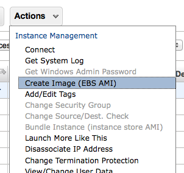

In this post I’ll run through the quick steps required to update your AWS Auto-Scaling group to use a new EC2 AMI. This post builds on the guide covered in my earlier post on setting up an Auto scaling group for an elastic load balancer, which in turn was built on the WordPress clustering guide. You could say this is part 3 in a rather long-running series.
There’s not much too this process thankfully.
Step 1: Create your new AMI
The easiest way I have found to do this is actually via the EC2 console. All I do is start a new instance on my current AMI, log into it and make any changes required (install/update packages etc) and then from the EC2 console, select the instance.
You don’t often need to log into the slave nodes, so if you need a refresher on how to do it, this command is all you should need:
ssh -i path/to/your/key.pem user@your-public-ip-of-the-node.compute-1.amazonaws.com |
Once the changes are made, select the instance in the console and select the ‘Create Image’ action like so:

You should see a new pending AMI in the AMI section of the console, while it’s being created.
Step 2: Test your AMI
Once the AMI is made, go ahead and fire up a test instance using it – this is a way to ensure that everything still works as you expect, and that the auto-scaling will start instances that do what you expect. I test a few of the functions on the commandline using curl, and fake Host: headers like this:
curl -H "Host: yourdomain.com" "http://your-public-ip-of-the-node.compute-1.amazonaws.com/path/to/file/to/test.php" |
This way you can quickly test a few different pages, or sites that run on the cluster without the hassle of changing your hosts file or DNS setup. if you need to do heavy duty testing, consider putting some entries in your hosts file – to do that you’ll need to use the actual IP, not the public DNS name of the instance.
Step 3: Update the launch configuration to use the AMI
Once you’re satisfied that the instance does what it should, create a new launch configuration that uses the new AMI, make sure you have read the previous blog post on setting up a launch configuration, I’ll assume you have and skip all the required setup.
# where ami-67890 is the new AMI you made in step 1. as-create-launch-config $NEW_CONFIG_NAME --image-id ami-67890 --instance-type t1.micro --group $YOUR_GROUP -monitoring-disabled |
Step 4: Update the Auto Scaling group
Lastly update the group itself to use the new config from step 3.
#assume group is blog-cluster-group and config is blog-cluster-3 as-update-auto-scaling-group blog-cluster-group --launch-configuration blog-cluster-3 |
If you have trouble remembering the names of our configs/groups use the describe commands:
# descibe your current configs, or a specific one as-describe-launch-configs # describe your current groups as-describe-auto-scaling-groups |
Once you have run this last command your auto scaling group should be ready to use the new AMI. To force it to start instances of the new AMI, you can kill off the old ones. Again, easy to do this via the EC2 console, or commandline – I’d suggest do one instance at a time and observe to make sure the auto-scaling is starting the correct instances as expected (and to avoid downtime).